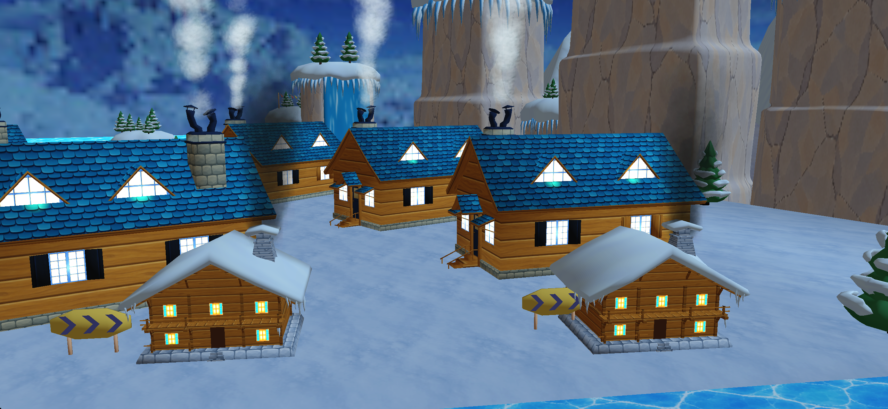
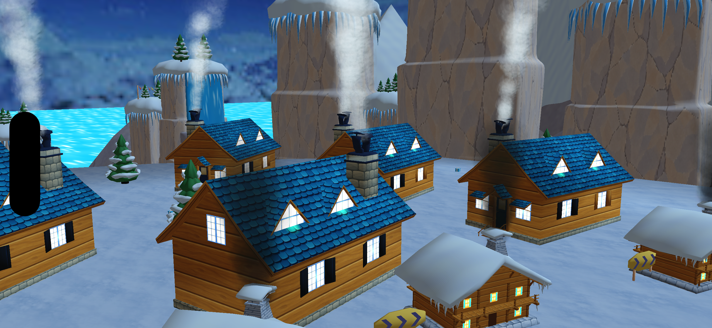
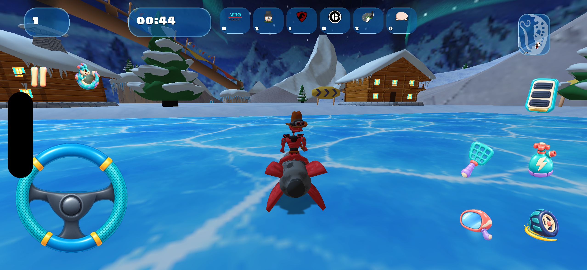
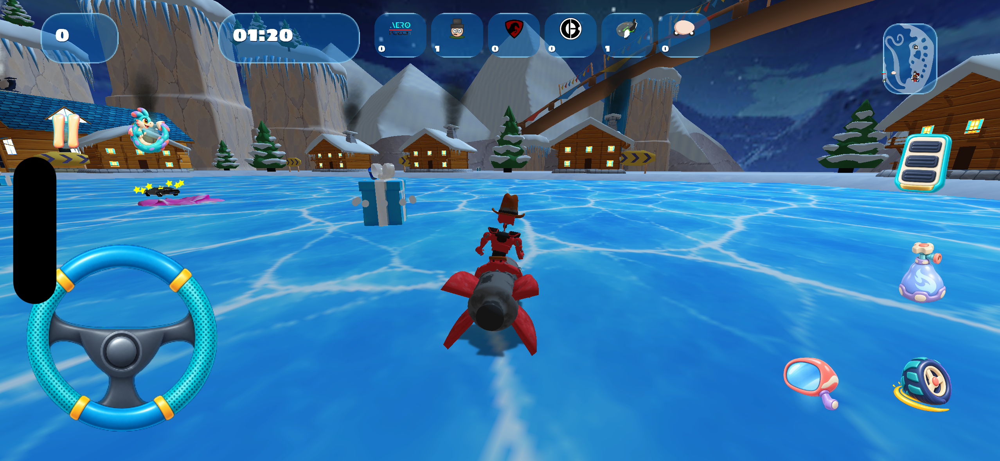
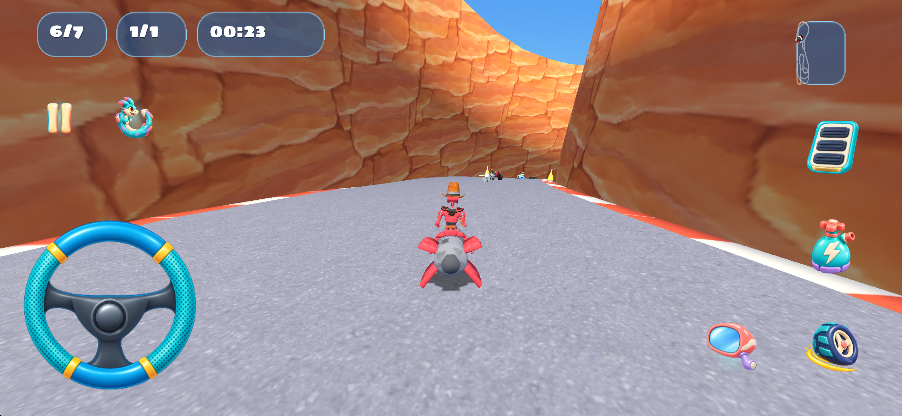
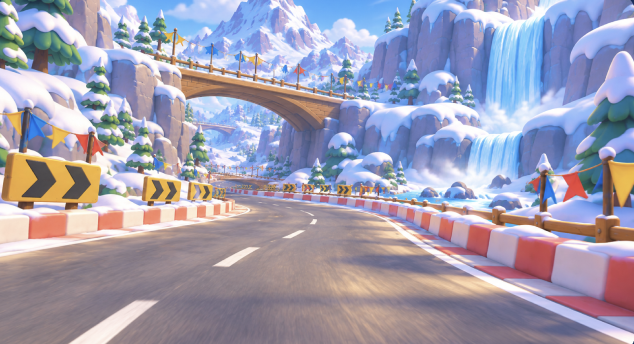
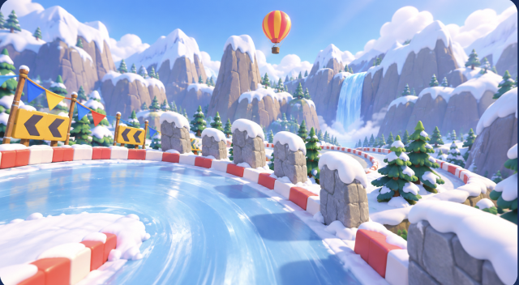
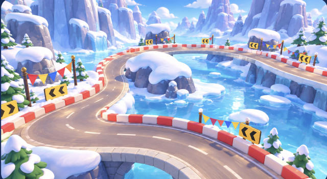
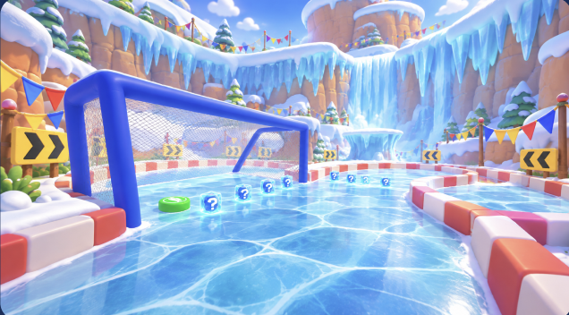

Перенесены три повторяющиеся гирлянды в одну общую модель. 71 ёлка уже размещалась по координатам; её модель и исходные текстуры теперь находятся в общем игровом пуле. Добавлены ещё 18 экземпляров той же ёлки на снежных уступах. Всего в этом этапе 92 размещения и две общие модели.
По замечанию пользователя обеим общим моделям домов назначено самосвечение окон. Исправление действует на всех картах, использующих эти библиотеки. Модели, текстуры, коллайдеры, центры и направления домов сохранены; изменение двух XML-материалов — 96 байт. Обновлены также семь библиотечных и итоговых файлов Blender.
HUD исправлен по уточнению пользователя: все шесть соперников находятся в одном компактном ряду сверху; внутри каждой карточки — превью из материалов персонажа и актуальные очки. Фоны позиции, кругов, таймера, миникарты и соперников полупрозрачны, со светлой рамкой. Подписи POS/LAP/TIME убраны; высота основных карточек уменьшена до 43 пикселей по актуальному макету. Соответствующие четыре фона исправлены в Figma 100:2 и заново экспортированы с альфа-каналом.
| Измерение | Байты |
|---|---|
| Карта до этого этапа | 26 043 936 |
| Карта после этапа, включая новое превью | 23 088 238 |
| Все новые общие модели и текстуры | 2 438 547 |
| Дополнение материалов существующих домов | 96 |
| Итого карта + новые общие ресурсы + материалы | 25 526 881 |
| Уменьшение с учётом нового превью | 517 055 |
| Уменьшение до замены превью | 50 900 |
| Всё установленное приложение после этапа | 294 007 475 |
Вес приложения измерен для несжатой Debug-сборки iOS Simulator. Это не размер IPA или загрузки App Store. Дополнительные ёлки не добавляют файлов моделей или текстур, но добавляют 71 496 отображаемых треугольников.
Основной меш арены и navmesh совпадают побайтно. Исходные 16 размещений домов, игровые точки и атмосферные объекты сохранены. Геометрия, UV, нормали и цвета общей ёлки совпадают с исходником. В итоговом Blender проверены 314 сохранённых мешей и 270 частей общих экземпляров; отсутствующих изображений нет.
Запущено настоящее событие FFA Ski Dash в iOS Simulator с проверочным лимитом 90 секунд. На 130-й секунде получен естественный экран результатов; принудительная победа не использовалась. Окна обоих типов домов просмотрены проверочными камерами движка. Компактный ряд очков и полупрозрачные фоны проверены в игровом кадре. FPS не измерялся; проверка всех окон отдельными игровыми ракурсами не проводилась.
Новое превью получено из движка, выполнены только центральная обрезка и уменьшение до 1024×576. Сгенерированная карточка кампании проверена в собранном и установленном приложении.









Этот этап сохраняет ранее переделанный стиль Ski Dash; полного нового визуального согласования по четырём референсам не записано. Общая работа по картам 1–10 продолжается.
Предыдущий отчёт · Сохранность арены · Общие окна · Игровая проверка